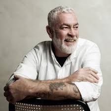
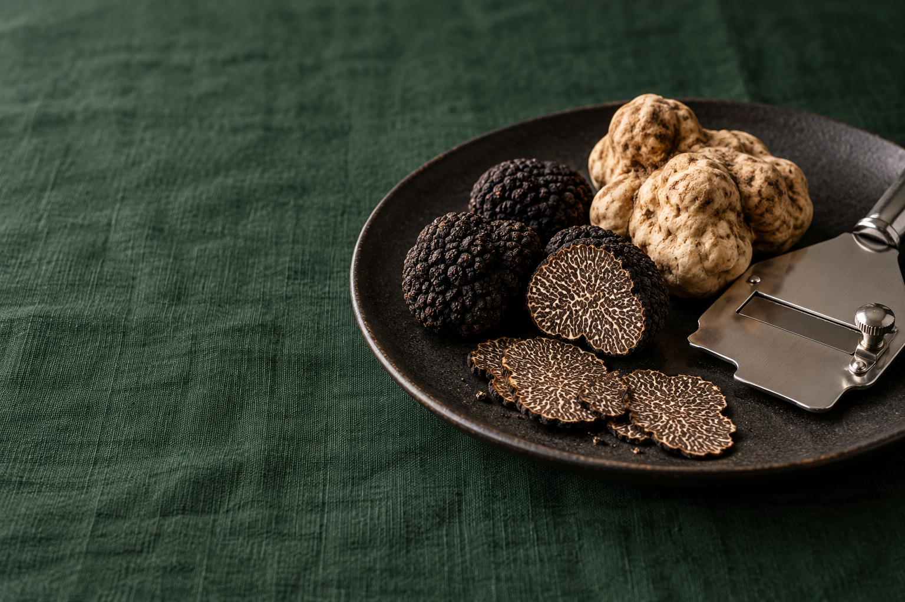
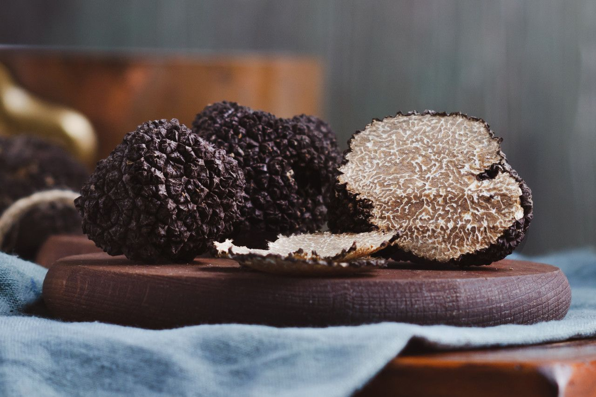
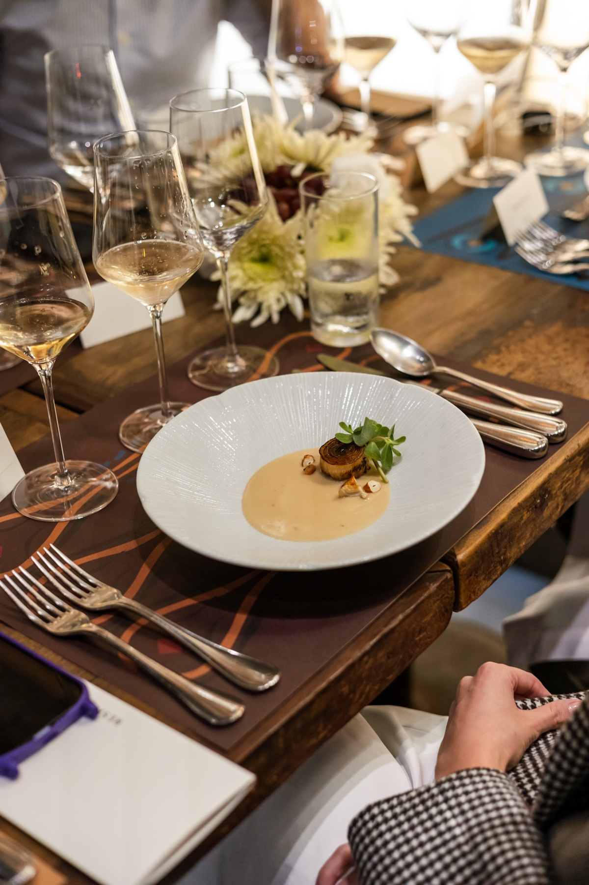

O menu
Alex Atala
Alex Atala assina um menu de cinco tempos dedicado às trufas. Em cada prato, as duas versões permitem perceber o que muda quando muda a origem do ingrediente, dos aromas às nuances de sabor.

22 de outubro de 2026 19h às 22h · Resid Bar
Trufas brasileiras e italianas em um jantar de cinco tempos por Alex Atala, com vinhos selecionados por Gabriela Monteleone.
Reservar minha vaga Descobrir a experiênciaO conceito
Há muito para perceber em uma trufa antes de saber de onde ela vem. Nesta noite, trufas brasileiras e italianas, negras e brancas, chegam à mesa com a mesma atenção.
A cada tempo, o prato é servido em duas versões, lado a lado: uma com trufa brasileira, outra com italiana. Você prova, percebe os aromas e troca impressões com quem está à mesa. A origem de cada uma só é revelada depois.
Sem a intenção de eleger uma vencedora, o jantar abre espaço para conhecer as particularidades de cada trufa e se surpreender com as próprias preferências.

As assinaturas

O menu
Alex Atala assina um menu de cinco tempos dedicado às trufas. Em cada prato, as duas versões permitem perceber o que muda quando muda a origem do ingrediente, dos aromas às nuances de sabor.
Os vinhos
Gabriela Monteleone assina a seleção dos vinhos e a harmonização do jantar. Os rótulos são escolhidos para acompanhar cada tempo, respeitando a delicadeza das trufas e o equilíbrio dos pratos.

À mesa
A jornada
Da chegada ao encerramento, uma noite inteira no Resid Bar.
Seu lugar à mesa
Quinta-feira, 22 de outubro de 2026
19h às 22h · Resid Bar · São Paulo
Uma mesa para 20 convidados.
Preço por pessoa
R$ 1.980 + 2.000 créditos RSD